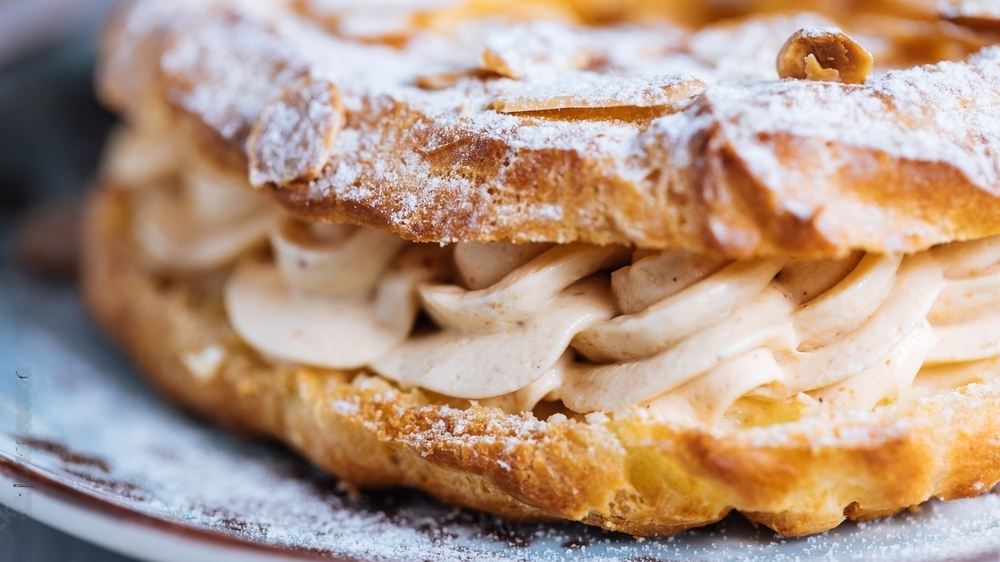

Paris-Brest

Conseils de préparation
Etape 1 : Préchauffer le four à 180°C. La pâte à choux : Dans une casserole, mettre le beurre en morceaux, l'eau et le sucre jusqu'à ébullition. Hors du feu, ajouter la farine d'un seul coup et mélanger aussitôt.
Remettre sur le feu 1 à 2 minutes pour dessécher la pâte tout en remuant. Ajouter les œufs un à un en asséchant la pâte entre chaque œuf, soit dans la casserole hors du feu, soit au robot.
Etape 2 : À l'aide d'une poche à douille et de la plus grosse douille, former une couronne sur une feuille de silicone ou de papier sulfurisé. Décorer d'amandes effilées. Mettre au four 180°C (thermostat 6) environ 1 heure.
La pâte doit bien sécher. La faire refroidir ensuite sur une grille.
Etape 3 : La crème : Porter le lait à ébullition, blanchir les jaunes d’œufs et le sucre. Ajouter la Maïzena tamisée puis incorporer le lait bouillant. Remettre 2 minutes sur feu doux en fouettant bien, elle va épaissir. Hors du feu, ajouter 50 g de beurre en petits morceaux en fouettant. Laisser refroidir la crème, filmer directement sur la crème.
Etape 4 : La crème refroidie, y ajouter le praliné et le reste de beurre en petit morceaux au fouet ou au robot. Remettre au frais plusieurs heures.
Pour finir : Le montage : Découper le 1/3 supérieur de la couronne avec un couteau à pain. Mettre la crème dans une poche à douille cannelée, remplir la couronne. Pour avoir un beau volume, mettre plusieurs couches : une dans le creux, une sur le bord intérieur de la couronne, une sur le bord extérieur et une autre par dessus. Poser le dessus de la couronne sur la crème, saupoudrer de sucre glace.
Notre avis
Ne vous fiez pas à son apparence classique, le Paris-Brest est loin d’être démodé.
Son goût riche en noisette s’allie à la perfection à l’onctuosité de sa crème généreuse et au craquant de ses noisettes caramélisées. Le tout est agrémenté d’un délicieux pralin sur la pâte dorée au four.